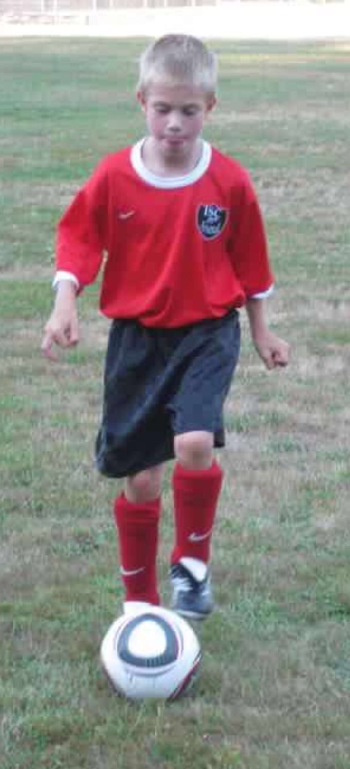
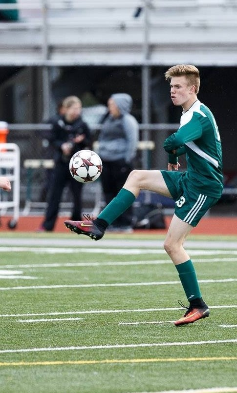
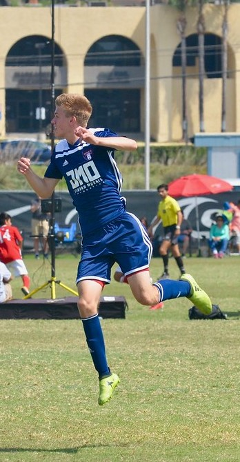

This is me when I was about 6 years old
It was my first full year of soccer, where I discovered it was my passion
I started playing soccer because of my Father. He played it all his life as well but had to quit in college because of injuries. I wanted to follow in his foot steps and make him proud so I wore the same number as him all my life, number 18.
Most nights for young kids consist of fun games and video games but mine were different. Everynight I would be out til it was too dark to see, I wouldd be constantly practicing and working on anything I could. I was dedicated to become like my Father.
This was my Freshmen year playing soccer
Freshmen Year Highschool Soccer
We went 16-0 my freshmen year on varisty, winning our division and going to state. I had 12 goals and 8 asssists on the season!
I went on to get injured later in the season by dislocating my kneecap horribly, I was out for 4 long months, it was the longest wait of my life! The whole time I trained in PT and rehab to get stronger everyday to be able to go back onto the field and play the game I love.
National League 2017
In 2017, my team, Eastside FC, went to Nationals in North Carolina. Only 32 teams in the United States for our age group were invited, it was an amazing experience. We lost in the group states with a 1-2-1 record but just being there was a success.
I've played striker all my life. I love scoring goals, I love the feeling of the ball hitting the back of the net and turning around to see all your teammates run at you at full speed. It is 100% the best feeling in the entire world for me.
Not only has soccer been a gateway in my life but also an outlet for me. My parents got divorced when I was young and going to practice helped me cope with my feelings, I learned how to vent with soccer. So throughout my life I've used soccer as a way of dealing with stress through middle school and highschool.